Summary
Monese is a digital financial services company that positions itself as an alternative to traditional banks. It allows users to open a current account without the need for credit checks, providing a debit card facility and international money transfer services. As part of the credit team, I contributed to developing a suite of features designed specifically to support ‘credit-invisible’ customers.
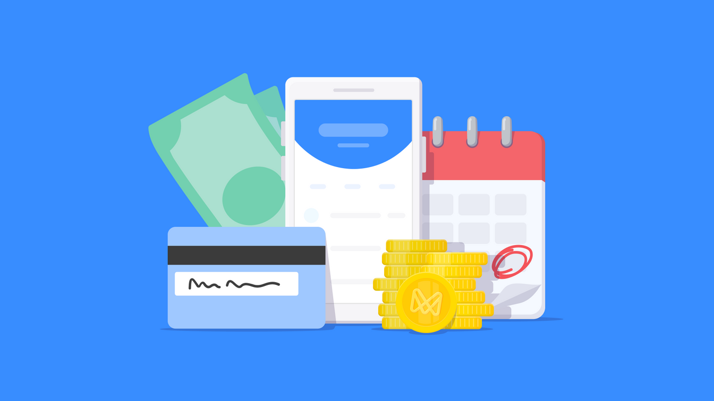
Intro
At Monese, credit remains the most requested feature by our customers, particularly among the near-prime segment—a group that is both large and underserved.
In the UK alone, there are an estimated 10-14 million people who face challenges accessing credit through traditional financial institutions (PWC, 2018).
These consumers often share certain characteristics:
- they may have a thin credit file due to limited borrowing history
- a mildly adverse credit history (such as a few missed payments)
- incomplete records from an inconsistent address history.
Notably, 84% of Monese customers are either ‘credit invisible’ or have a poor credit score. Of these, 47% are classified as ‘credit invisible’, indicating a significant opportunity for growth, as we currently capture only a small portion of this market.
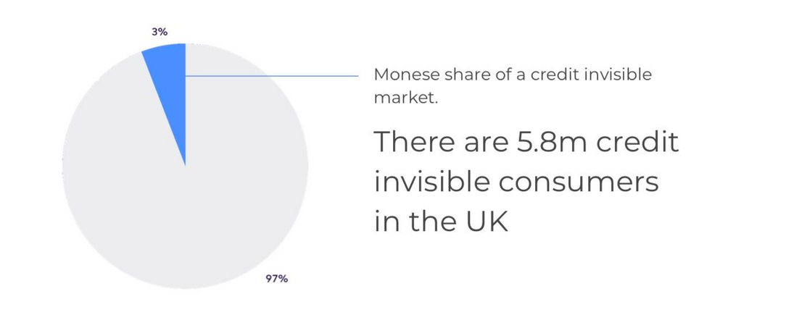
Customer problems to solve
Problem 1: Credit visibility
Customers can’t get access to the credit products they need because of thin credit files or poor credit scores.
Problem 2: Knowledge gap
Customers lack knowledge on how to improve their access to credit.
Problem 3: Cashflow
Unexpected expenses or dips in income push customers into exploitative lenders.
Problem 4: Mobility barriers
Customers who are prime in their home country struggle to prove they are creditworthy in their new country, which punishes mobility.
Our vision
Unlock credit for the millions of subprime and credit invisible who struggle to get credit by smashing traditional barriers to credit worthiness.
Empower our customers to achieve their goals by giving them the knowledge to improve their understanding of credit and the tools with which to take action.
Breakdown international barriers to mobility by allowing customers to passport their credit history from one country to another.
Serve our customers with the right products by using machine learning to anticipate their needs and offer pre-approved solutions in real time.
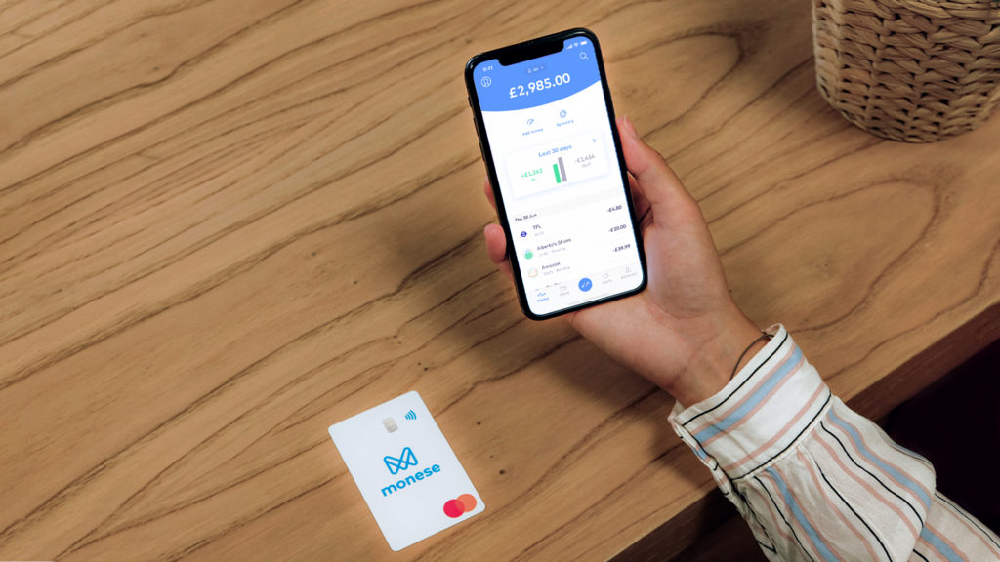
This challenge is what motivated me when I joined the credit team. Together, we developed a suite of features specifically designed to address these issues and help more customers gain access to affordable credit.
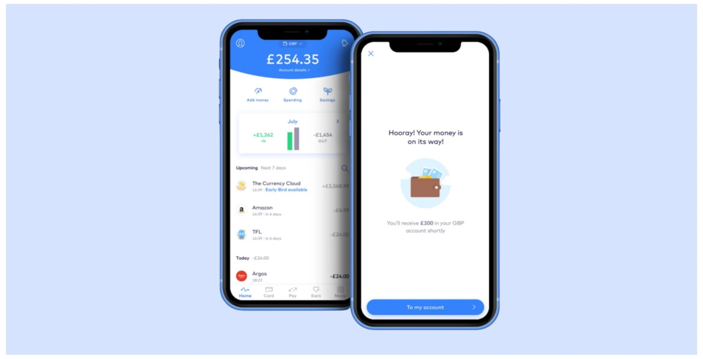
Salary advance (Early Bird)
Problem:
Due to cashflow issues our salaried users are taking up payday loans with high APRs.
Solution:
Provide salaried users with an alternative method of managing cashflow other than taking a loan. Users can draw down on their actual pay for a fee.
Benefits:
- Provides an alternative to cheaper alternative to high APR payday loans.
- Improves our users financial wellbeing
- Not a loan so there is no APR
Monese Benefits:
- Attract more salaried Monese users
- Helps our Credit Risk team better understand our user’s credit behaviour/profiles
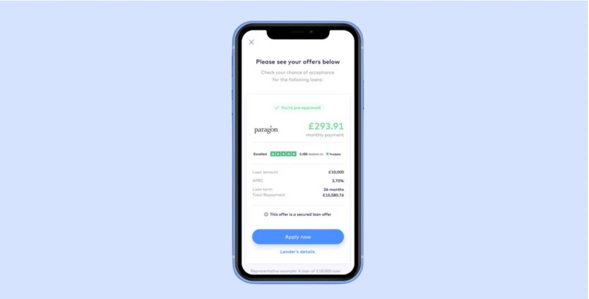
Personal Loans
Problem:
A portion of our UK user base have recurring cash flow issues that require them to manage with high APR, short-term loans. In addition, 16% of our UK users who have good credit scores also want access to longer-term loans, which they currently can’t get through the Monese app.
Solution:
Provide a solution to enable our UK customers to get access to affordable short-term and long-term loans at affordable APRs (APR < 60%).
Benefits:
- Access to credit
- More lender choice
Monese Benefits:
- Allow us to generates revenue with limited risk
- Helps our Credit Risk team better understand our user’s credit behaviour/profiles
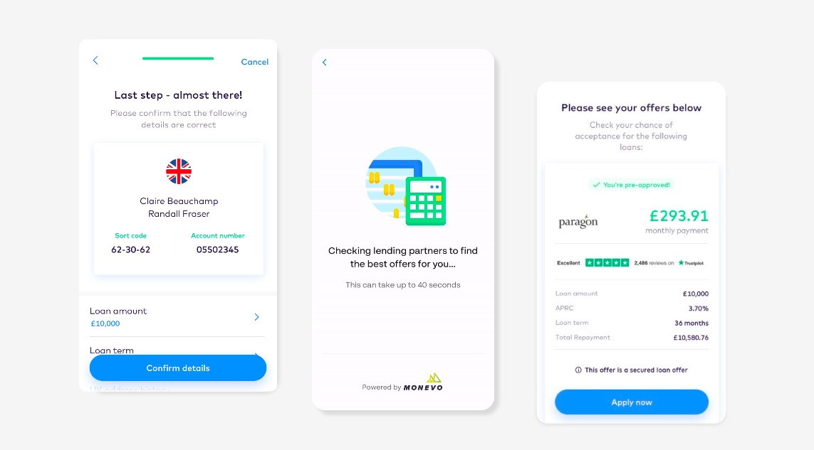
This was our first and main credit product, designed to enable Monese users to apply for a loan directly through the app with ease and convenience. With this feature, we aimed to provide accessible financing options to our customers, particularly those who have previously faced barriers in obtaining loans from traditional banks.
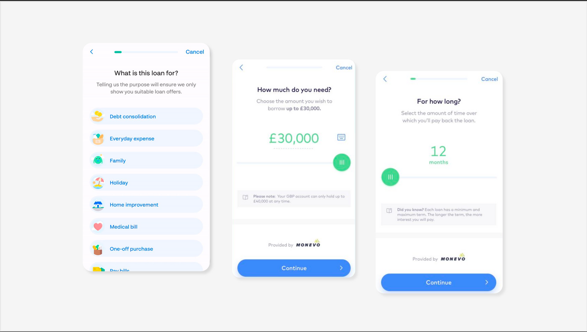
The process...
When we began developing the loan application process, our primary goal was to ensure that customers could complete their applications seamlessly from start to finish—all within the Monese app. We streamlined the process by breaking it down into three core sections, focusing only on the legally required questions. This not only simplified the application but also made it far more digestible for the customer.
To enhance the user experience, we displayed one question per screen, categorizing them into three meaningful sections:
- Contact details
- Employment
- Expenditure
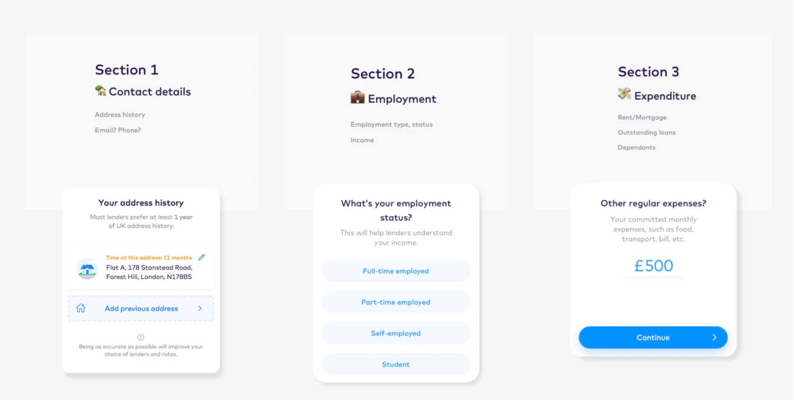
We also ensured that from the very beginning of the process, we clearly communicated how long the loan application would take and what information users would need to complete it. By setting clear expectations upfront, we aimed to reduce any potential frustration and build trust in the process.
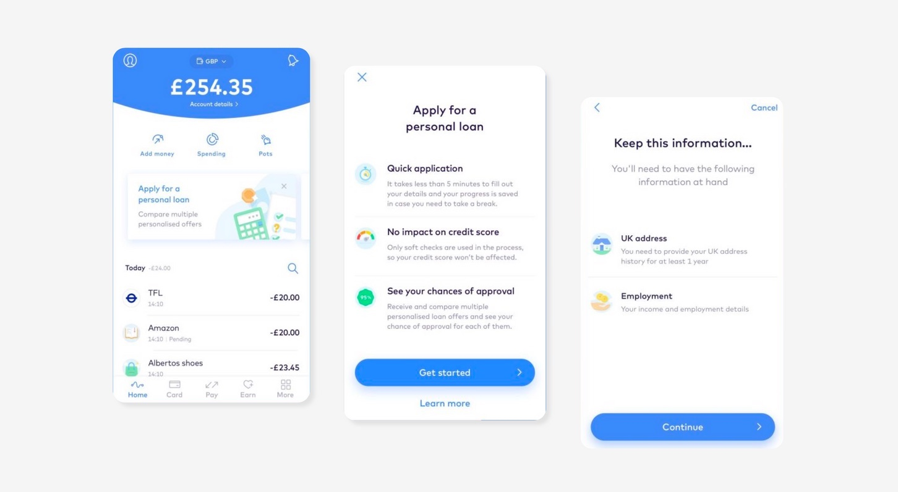
Additionally, to further smooth the process, we pre-populated certain fields with information already available to us, such as personal details, reducing the time and effort required from users. We also incorporated a progress bar at the top of the screen, ensuring that customers always knew where they were in the application journey.
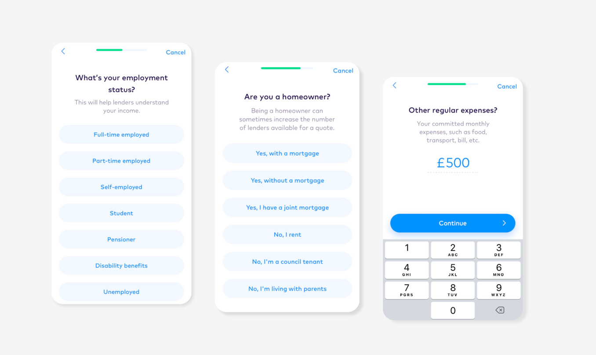
User testing
To validate our approach, we conducted early user testing, gathering valuable feedback directly from our users.
We focused on testing the flow for applying for a loan. The test began from the Home screen, where users initiated the loan application process, and continued through a series of questions, all the way to the final application results.
Before the final release, it was important to ensure users could complete the entire process in under five minutes. We also aimed to identify which sections were the most challenging for users and gauge overall reception.
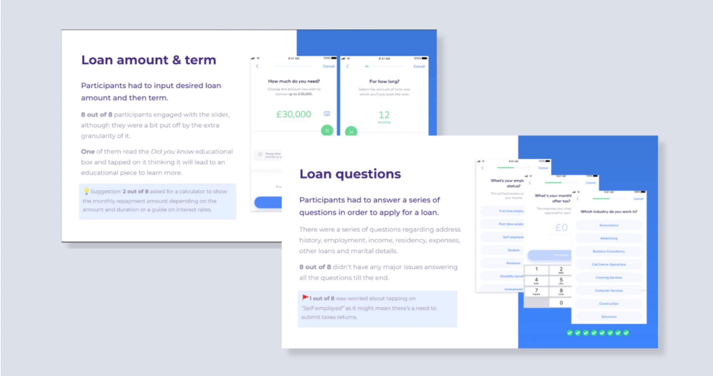
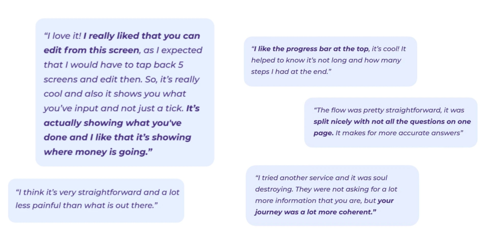
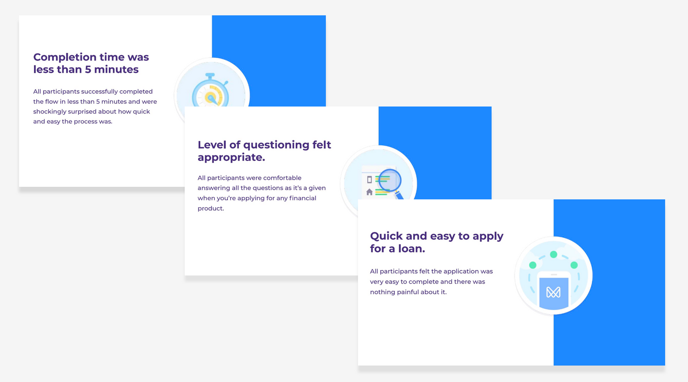
What we learned from User Testing
The positives
✅ The level of questions felt appropriate: All participants were comfortable answering all the questions presented in loan application.
✅ It was quick and easy to apply: All participants felt the application was very easy to complete and were positively surprised about how quick and easy the process was.
✅ Visual progress was good enough: All participants noticed the progress bar at the top and felt it didn’t positively or negatively impact their application.
✅ The order of questions made sense: All participants found the order of the sections logical
The negatives
👎 The save and exit option wasn’t clear: Participants didn’t understand that closing the application would save it.
👎 It wasn’t clear that the loan was provided trough a broker and not by Monese.
👎 People would have preferred to be provided more financial education about credit and loans before proceeding., as well as a loan calculator.
👎 There were some concerns about tapping on “Self-employed” as it might mean there’s a need to submit taxes returns.
What we learned after launch
The numbers
- 20k users who saw the new feature
- 28.6% overall completion rate
- 73.5% application from completion rate
- 80.3% drop off of users after intro screen
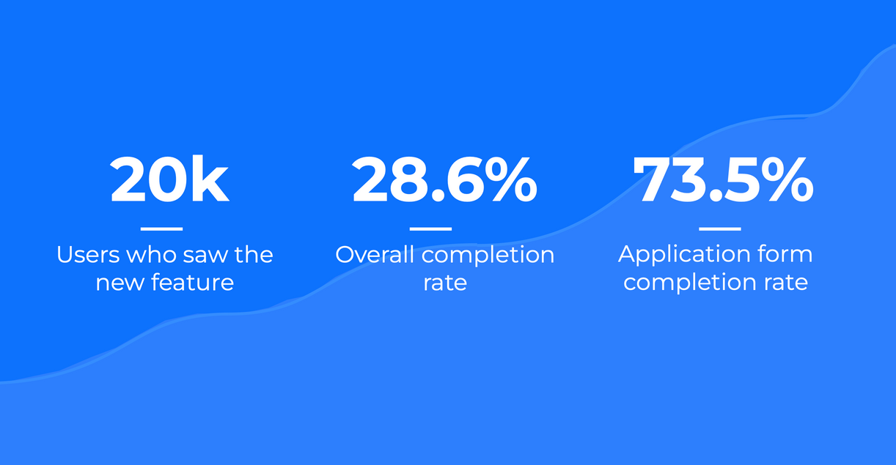
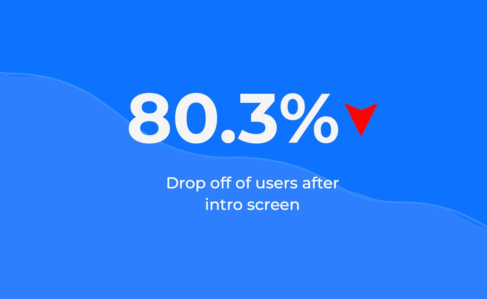
Turning feedback into actions
We shared the results with the wider team and incorporated the feedback to further enhance the loan application process:
- We launched an A/B test with two variants of the intro screen, with the second version reflecting insights gathered from both qualitative and quantitative feedback. One key change was reducing the amount of text on the screen to make room for more information about our broker, which users had previously found unclear.
- Additionally, we updated the “What you’ll need to get started” screen to include details about the requirement for a UK phone number, which had been a barrier preventing some users from completing their loan applications.
- To improve the overall experience, we also introduced a loan calculator before users started the application process, along with more educational content about credit and loans.
These enhancements made the process more transparent and user-friendly, addressing key pain points identified during testing.
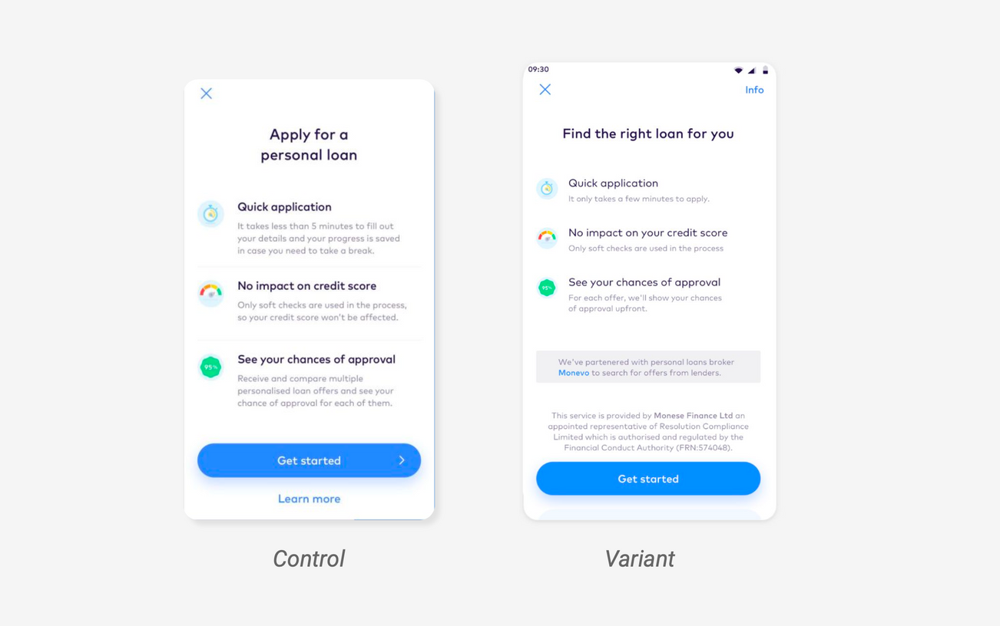
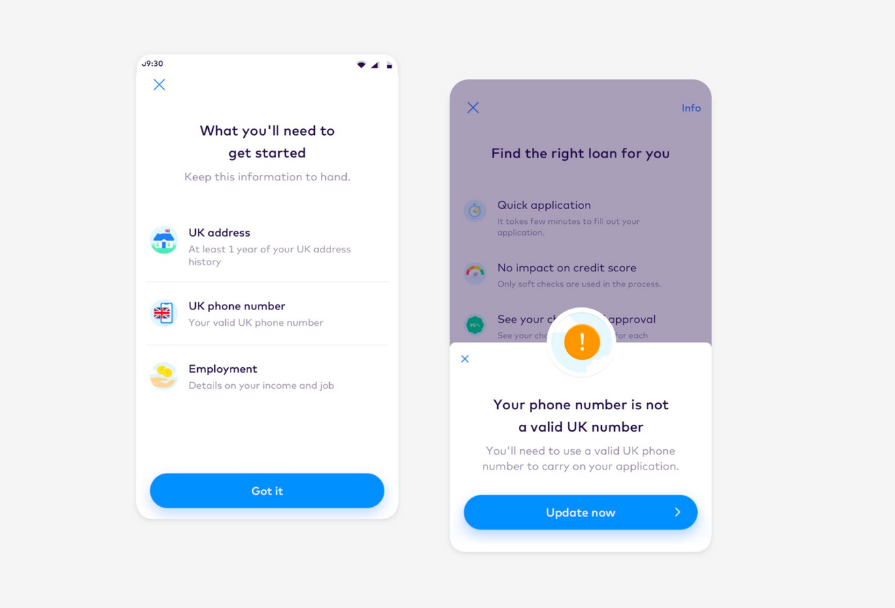
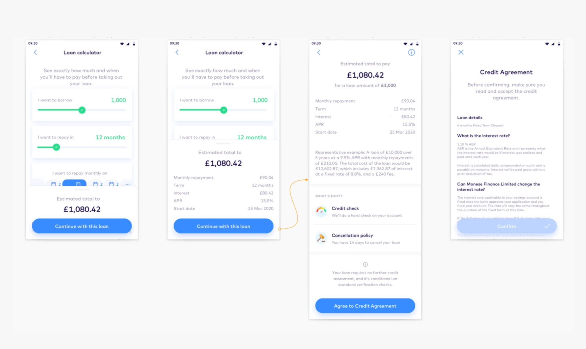
Other ideas
We also considered adding a customer happiness survey to gather direct feedback from users about their loan experience. This would allow us to continuously monitor user satisfaction, identify potential areas for improvement, and ensure that we’re meeting customer needs effectively.
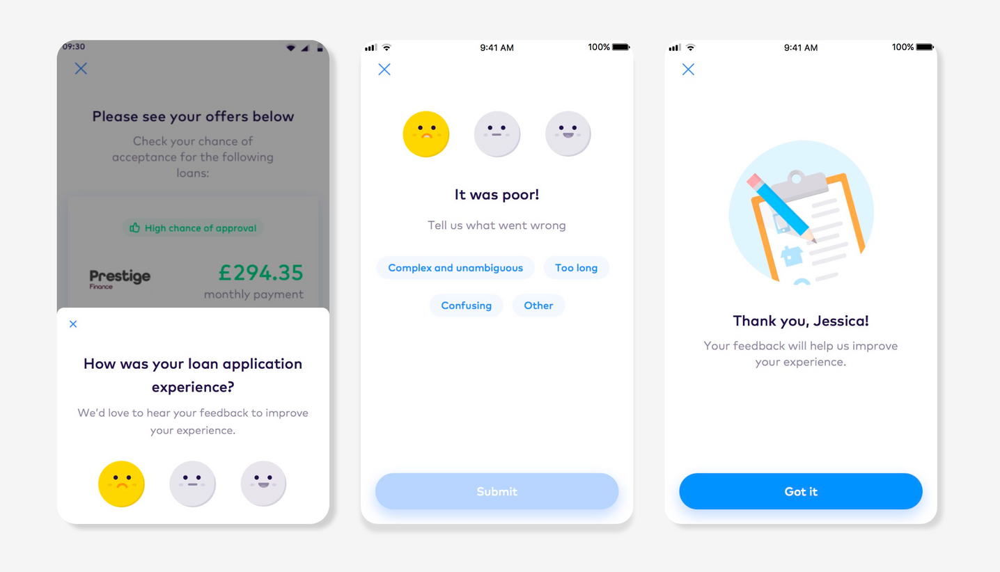
Final numbers
- 74.8% drop off of users after intro screen
- 80.6% application form completion rate
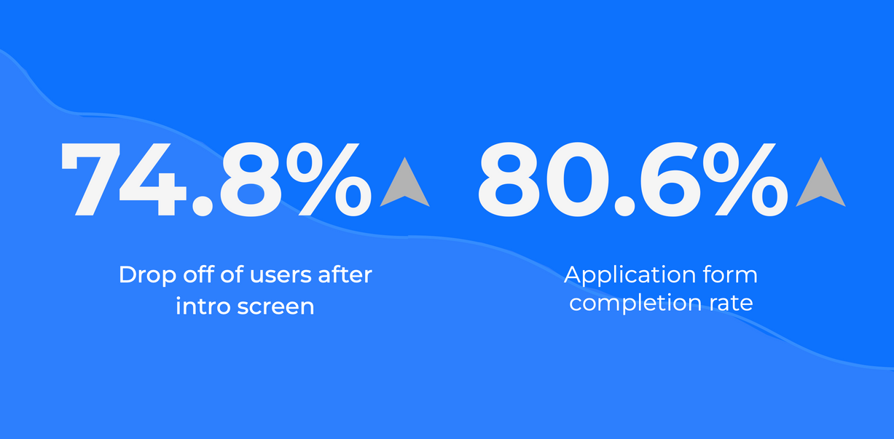
The drop-off decreased by 5.5% (from 80.3% to 74.8%), while the application form completion rate improved by 7.1% (from 73.5% to 80.6%).
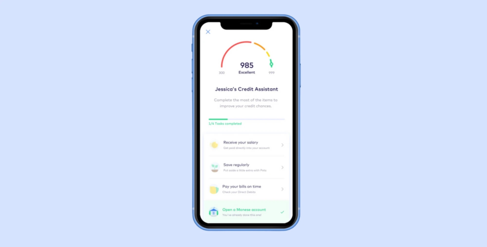
Credit Assistant
Problem:
Only 18% of the 49K users were accepted for a loan as they were labeled as ‘Not Available’ & ‘Very Poor’ metrics. This in turn makes it very difficult for them to access affordable credit.
Among the findings of a major survey of UK personal finances was the statistic that about 16% of UK adults are credit illiterate - they don't understand how to
build their credit scores.
Solution:
Provide our users with a solution that will enable them to not only understand the factors impacting their credit score but also improve it.
User Benefits
- Visibility / Improve credit score
- Unlock credit at cheaper rates
Monese Benefits
- Improves user retention
- Increases daily/monthly active use
- Advanced features could be monetized (i.e., Credit Score Alerts)
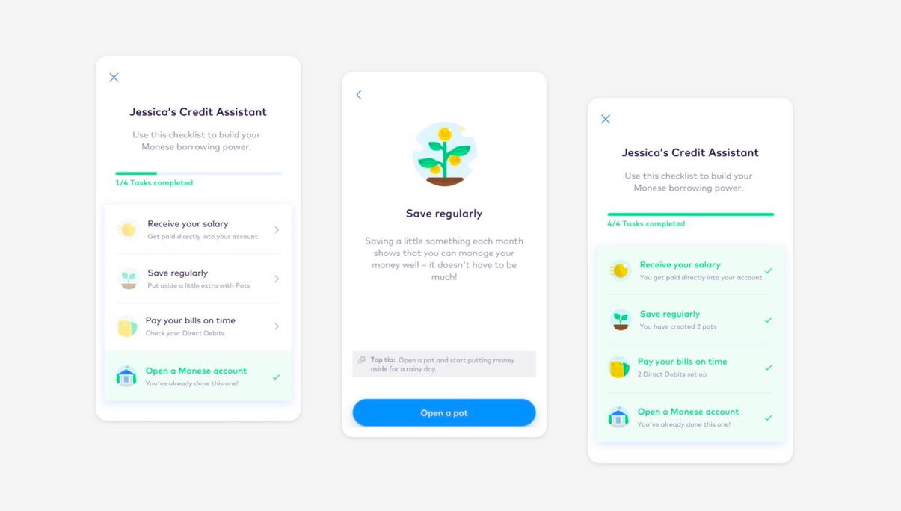
The design of the credit checklist was driven by our goal to create an engaging, actionable tool that helps customers improve their credit score. Rather than offering a simple, dry list of tasks, we chose to make the checklist interactive and informative.
Each item on the list includes a clear explanation of how completing that task can positively impact the customer’s credit score. Additionally, we integrated direct links within the checklist, allowing customers to immediately take action, such as setting up a direct debit or reviewing their spending.
This approach not only educates users on how to improve their creditworthiness but also makes the process seamless and engaging, ensuring that the experience feels more interactive and user-friendly.
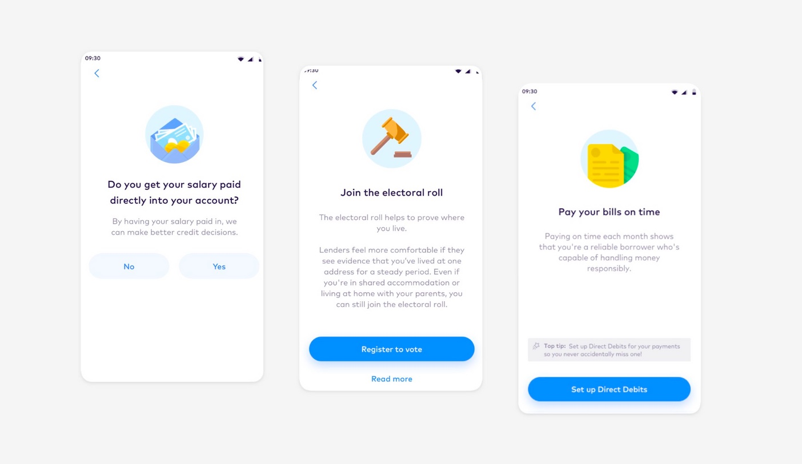
Conclusion
Launching these new credit decisioning features has proven to be a crucial step in empowering the ‘credit invisible’ customers.
By utilizing alternative data and credit reference agency information, we’ve been able to offer small initial loans, allowing these customers the opportunity to demonstrate their creditworthiness.
As a result, many have successfully improved their credit scores, while also gaining access to more affordable credit options. This has not only strengthened customer engagement but also provided Monese with a competitive edge by refining our internal credit risk models and better serving a traditionally underserved market.